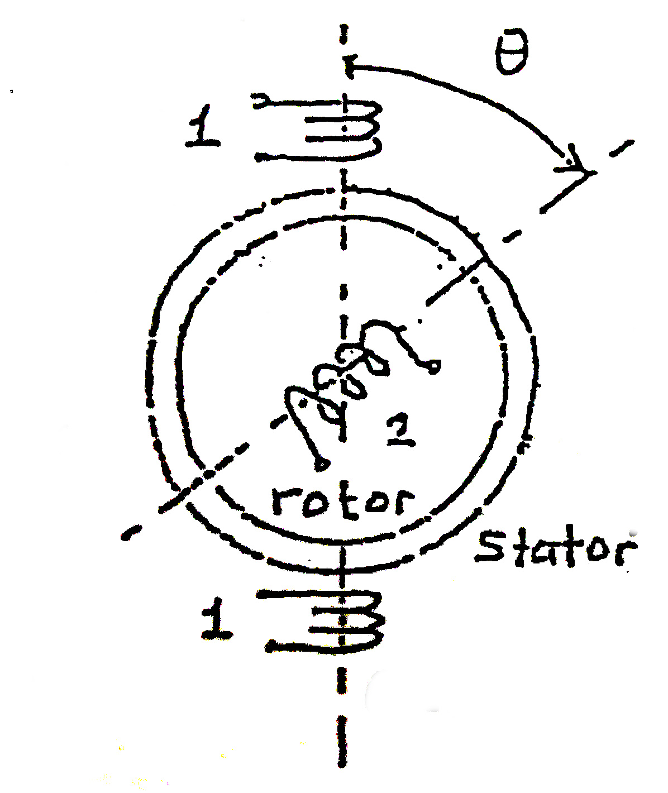
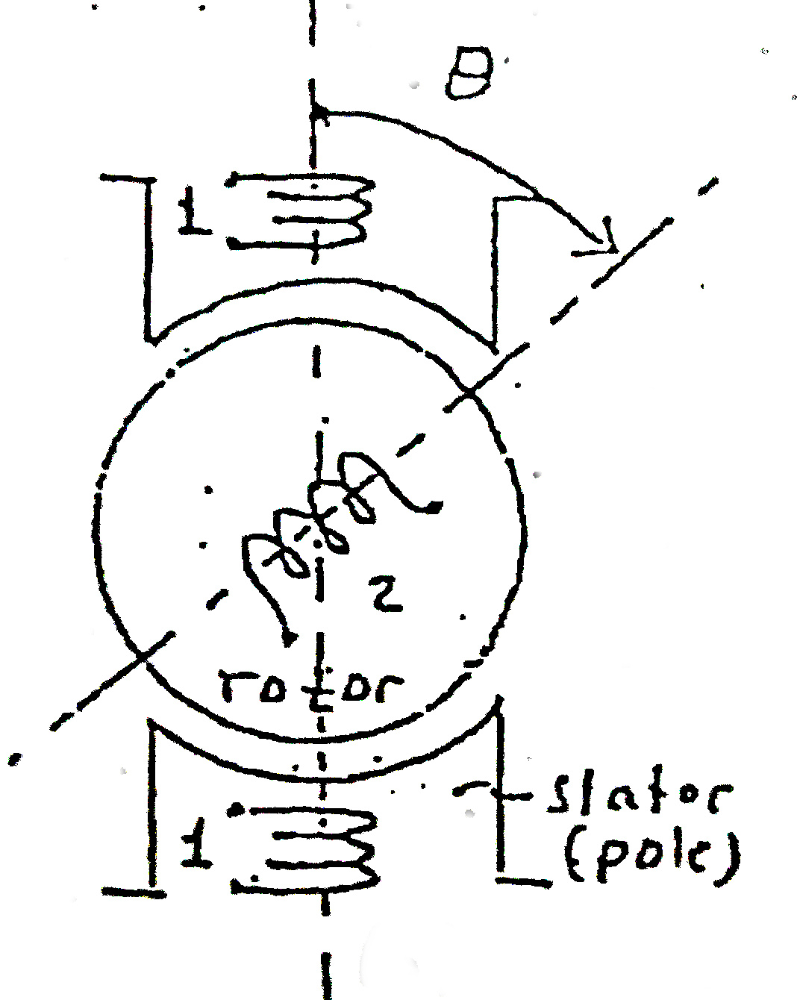
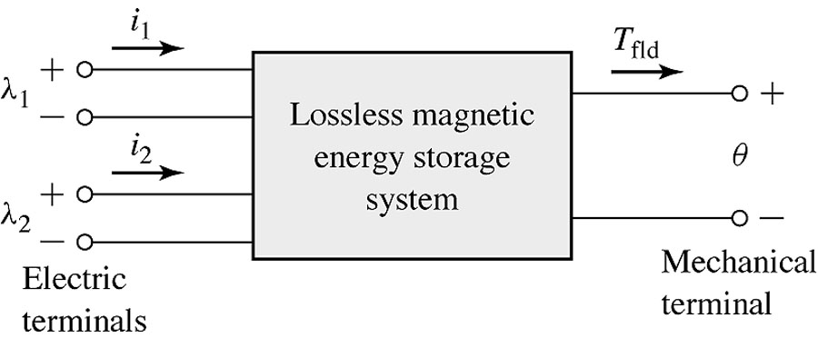

class: center, middle # EE-568 Selected Topics in Electrical Machines ## Ozan Keysan [ozan.keysan.me](http://ozan.keysan.me) Office: C-113 <span class="meta">•</span> Tel: 210 7586 --- # Basics of Energy Conversion --- # Lorenz Force ## \\(\vec{F} = q (\vec{E} + \vec{v} \times \vec{B})\\) -- ### In a purely magnetic system (no electric field) : ## \\(\vec{F} = q \vec{v} \times \vec{B}\\) -- ### or alternatively force density (\\(N/m^3\\))): ## \\(\vec{f} = \rho \vec{v} \times \vec{B} = \vec{J} \times \vec{B}\\) #### \\( \rho \\): Charge density (C/m3) , \\( \vec{v} \\): velocity --- #Lorenz Force ## \\(\vec{F} = \vec{J} \times \vec{B}\\)  --- # Lorenz Force Applications - ### [Force Demo](http://www.youtube.com/watch?v=K9ks_DNPAFQ) - ### [Homopolar Motor](http://www.youtube.com/watch?v=kJKuNcgbW-o) - ### [Wolrd's Simplest Electric Train](https://www.youtube.com/watch?v=J9b0J29OzAU) - ### [Navy Railgun](https://www.youtube.com/watch?v=NmFeRYPNP88) - ### [Aselsan Tufan](https://www.youtube.com/watch?v=O5GtuQk3t44) - ### [Aselsan Tufan-2](https://www.youtube.com/watch?v=MxloiA5mSSk) --- # Determine the direction of rotation <img src="./images/emec_ex1.png" alt="Drawing" style="width: 600px;"/> --- #What would happen in the device below? <img src="./images/emec_double_relay.png" alt="Drawing" style="width: 800px;"/> --- # Basics - ## Forces and Torque -- - ## Energy Balance -- - ## Stored Energy (Magnetic and Mechanical) -- - ## Losses --- # Losses - ## Electric Losses (Ohmic Losses) -- - ## Magnetic Losses (Hysteresis Loss) -- - ## Mechanical Losses (Friction etc) --- # Lossless System <img src="./images/lossless_magnetic_system.png" alt="Drawing" style="width: 700px;"/> -- ### Electric Energy Input = Stored Magnetic Energy + Mechanical Work --- # Energy Balance ### Ignore resistive and friction losses -- ### \\(\Delta W\_{electrical} = \Delta W\_{magnetic} + \Delta W\_{mechanical}\\) -- ### \\( Vi\, \mathrm{d}t = i \, \mathrm{d}\lambda = \Delta W\_{magnetic} + f_{mech} \, \mathrm{d}x\\) ### or -- ## \\( \Delta W\_{magnetic} = i \, \mathrm{d}\lambda - f_{mech} \, \mathrm{d}x\\) --- # Energy Balance ## Same can be obtained from the power relations ## \\( \dfrac{\partial W\_{magnetic}}{\partial t} = V.i - f_{mech} \dfrac{\partial x}{\partial t} \\) -- ## \\( \dfrac{\partial W\_{magnetic}}{\partial t} = i \dfrac{\partial \lambda}{\partial t} - f_{mech} \dfrac{\partial x}{\partial t} \\) --- # Review: Magnetic Energy  --- # Review: Magnetic Energy ## \\(W\_{stored} = \int_0^\lambda i(\lambda) d\lambda \\) -- ## or from B-H curve ## \\(W\_{stored} = \int \_{volume } (\int_0^B H dB) \\) --- # Magnetic Energy ### In Linear Systems: -- ## Magnetic Energy = Magnetic Co-Energy -- ## Magnetic Energy + Magnetic Co-Energy = \\(\lambda i\\) -- ### Thus (only in linear systems) ## W(magnetic) = \\(\dfrac{1}{2} \lambda i = \dfrac{1}{2} L i^2 =\dfrac{1}{2L} \lambda^2 \\) --- # Singly-Excited Electromechanical System <img src="./images/emec_relay.png" alt="Drawing" style="width: 800px;"/> --- # Force from the Stored Energy -- ## Derivative of Energy w.r.t. position gives the force! --- # Force from Stored Energy ## \\(W\_{magnetic} = i d\lambda - f dx\\) ### Take derivative -- ### Some useful reading: - #### [MIT From Lasers to Motors](http://ocw.mit.edu/courses/electrical-engineering-and-computer-science/6-007-electromagnetic-energy-from-motors-to-lasers-spring-2011/readings/MIT6_007S11_forces.pdf) - #### [Fitzgerald-Electromechanical Energy Conversion](http://cnx.org/contents/XKs0ES7Y@1/Chapter-3Electromechanical-Ene) --- # Force from Stored Energy ### \\(Force = - \dfrac{\partial W\_{mag}(\lambda, x)}{\partial x} |\_{\lambda = constant}\\) -- ## For Linear Systems ### \\(Force = - \dfrac{\partial}{\partial x} (\dfrac{\lambda^2}{2 L(x)}) =\dfrac{ \lambda^2}{2 L(x)^2} (\dfrac{d L(x)}{dx}) \\) -- ### \\(Force = \dfrac{i^2}{2} \dfrac{d L(x)}{dx} \\) --- # Example: ### Derive the force as a function of position --- # Example: [Junkyard Magnet](https://www.youtube.com/watch?v=XBWy9gzGGd4) -- ### Derive the force: <img src="./images/junkyard_magnet_example.png" alt="Drawing" style="width: 500px;"/> --- # Virtual Work Method -- ## When \\(\Phi\\) is constant: ### \\(Force = - \dfrac{\partial W\_{mag}(\Phi, x)}{\partial x} |\_{\Phi = constant}\\) --- # Virtual Work Method -- ## Use Co-energy (\\(W\_{mag}'\\)) instead of Magnetic Energy -- ## When MMF (\\(NI\\)) is constant: ### \\(Force = \dfrac{\partial W'\_{mag}(\mathrm{F}, x)}{\partial x} |\_{\mathrm{F} = constant}\\) --- # Summary ## Magnetic Circuit Tries -- - ## To reduce \\(W\_{magnetic}\\) if \\(\Phi\\) is constant -- - ## To maximize the inductance -- - ## To minimize the reluctance (\\(L=N^2/R\\)) --- ## Mechanical Power & Energy: -- ## Linear Motion: -- \\(P = F v = F \dfrac{dx}{dt}\\) Watt -- ## Rotational: -- \\(P=T \omega = T \dfrac{d\theta}{dt} \\) Watt -- ## Linear Motion: \\(W = \int P dt = F x \\) Joule -- ## Rotational: \\(W= \int P dt = T \theta \\) Joule --- ## Linear Acceleration: -- ## \\(F = m a = m \dfrac{dv}{dt}\\) -- ## Rotational Acceleration: -- ## \\(T=J \dfrac{d\omega}{dt} \\) Watt ## J: Rotational Inertia (\\(kgm^2\\)) --- # What would happen in this circuit? <img src="./images/single_phase_reluctance_motor.png" alt="Drawing" style="width: 700px;"/> --- # Can you guess the torque expression? <img src="./images/single_phase_reluctance_motor.png" alt="Drawing" style="width: 700px;"/> --- # Rotational Systems: -- ## Remember in linear systems: ### \\(f = - \dfrac{\partial W\_{mag}(\Phi, x)}{\partial x} |\_{\Phi = constant}\\) ### or alternatively use Co-energy: ### \\(f = \dfrac{\partial W'\_{mag}(\mathcal{F}, x)}{\partial x} |\_{\mathcal{F} = constant}\\) --- # Rotational Systems: ## Take the derivative wrt \\( \theta \\) not \\( x \\): -- ### \\(T = - \dfrac{\partial W\_{mag}(\Phi, \theta)}{\partial \theta} |\_{\Phi = constant}\\) ### or alternatively ### \\(f = \dfrac{\partial W'\_{mag}(\mathcal{F}, \theta)}{\partial \theta} |\_{\mathcal{F} = constant}\\) #### [More information](http://engineering.nyu.edu/mechatronics/Control_Lab/Criag/Craig_RPI/SenActinMecha/EM_Motion_Fundamentals_2.pdf) --- # Rotational Systems: ## Take the derivative wrt \\( \theta \\) not \\( x \\): -- ## \\(T = - \dfrac{1}{2}\Phi^2\dfrac{d R(\theta)}{d \theta} |\_{\Phi = constant}\\) ### or alternatively ## \\(T = \dfrac{1}{2}I^2\dfrac{d L(\theta)}{d \theta} |\_{i = constant}\\) --- # How can we achieve a constant rotation? -- ## Single Phase Reluctance Motor -- <img src="./images/ee564/reluctance_motor.gif" alt="Drawing" style="width: 500px;"/> [Magnetorquer](https://blog.satsearch.co/2019-08-21-magnetorquers-an-overview-of-magnetic-torquer-products-available-on-the-global-marketplace-for-space.html) --- # Single Phase Reluctance Motor -- <img src="./images/ee361/step_motor.gif" alt="Drawing" style="width: 400px;"/> ### [Magnetic Flux](https://www.youtube.com/watch?v=hDJnLt7cBTY), [Micro-stepping for higher accuracy](https://www.youtube.com/watch?v=eyqwLiowZiU) --- # Reluctance Motors <img src="http://www.motioncontroltips.com/wp-content/uploads/2016/12/switched-reluctance-motor-with-iron-only-rotor-copy.jpg" alt="Drawing" style="width: 600px;"/> ### [More info](http://electrical-engineering-portal.com/characteristics-and-work-principles-of-switched-reluctance-sr-motor) --- # Reluctance Motors <img src="http://www.abb-conversations.com/wp-content/uploads/2012/11/ABB-IE4-Synchronous-Reluctance-Motor-SynRM.jpg" alt="Drawing" style="width: 700px;"/> --- # Who is this guy? <img src="https://www.jamesdysonaward.org/media/1004/jd-cutout.png" alt="Drawing" style="width: 700px;"/> --- # James Dyson <img src="https://www.donanimhaber.com/images/images/haber/73464/Dyson070912_2331798b.jpg" alt="Drawing" style="width: 700px;"/> ### [Digital Motor](https://www.youtube.com/watch?v=6kcGltYWz3k), [Operating Principle](https://www.youtube.com/watch?v=yajwmhe96pg), [Manufacturing](https://www.youtube.com/watch?v=L5IROOrHg5w) --- # Dyson uses Reluctance Motors <img src="https://larryfire.files.wordpress.com/2010/04/dyson-digital-motor-exploded-view1.jpg" alt="Drawing" style="width: 800px;"/> ### [Digital Motor](https://www.youtube.com/watch?v=6kcGltYWz3k), [Operating Principle](https://www.youtube.com/watch?v=yajwmhe96pg), [Manufacturing](https://www.youtube.com/watch?v=L5IROOrHg5w) --- # Reluctance Motor Example: ## Calculate the torque expression -- ### with constant current. -- ### with sinusoidal current -- ### [Torque Graphs](https://docs.google.com/spreadsheets/d/1MDdJiaDq6uIzYzGMhTugNqbFBcJJClO-m_LqdGe1ZQ4/edit?usp=sharing) ### [Solutions](https://github.com/ozank/ozank.github.io/raw/master/files/ee361_emec_reluctance_motor_example.pdf) --- # Summary ## Magnetic Circuit Tries -- - ### To maximize the inductance, to minimize the reluctance (\\(L=N^2/R\\)) - ### To decrease the magnetic energy (increase co-energy) ## Rotational systems are similar to linear systems, but take the derivative of magnetic energy in terms of \\(\theta\\) instead of \\(x\\). --- # What is the torque? ## Cylindrical Rotor, Cylindrical Stator  --- # What is the torque? ## Cylindrical Rotor, Salient Stator  --- # What is the torque? ## Salient Rotor, Cylindrical Stator <img src="./images/salient_rotor.jpg" alt="Drawing" style="width: 300px;"/> --- # Multiply-Excited Systems ## What happens if both of the coils are excited? <img src="./images/multiply_excited.png" alt="Drawing" style="width: 700px;"/> --- # Multiply-Excited Systems  ## Electrical Energy = Magnetic Energy + Mechanical Energy -- ### \\(dW\_{mag} (\lambda\_1,\lambda\_2,\theta) = i\_1 d\lambda\_1 + i\_2d\lambda\_2 - T d\theta\\) --- # Mutual Inductance <img src="https://www.electrical4u.com/images/february16/1456131982.gif" alt="Drawing" style="width: 600px;"/> ### Write down the voltage equation of Inductor 2. --- # What is the stored energy in coil1? ### \\(W\_{mag1}= \dfrac{1}{2}i^2 L\\) -- \\(\quad \rightarrow\\) Not Correct! -- ### \\(dW\_{mag1}= i\_1 d\lambda\_1 \\) -- ### \\(dW\_{mag1}= i\_1 (L\_{11}di\_1 + L\_{12}di\_2) \\) --- # Total stored energy (coil1+coil2)? ## \\(dW\_{mag}= i\_1 d\lambda\_1 + i\_2d\lambda\_2 \\) -- ## Or it can be written as: -- ## \\(W\_{mag}=\int dW\_{mag} \\) ## \\(= \dfrac{1}{2} L\_{11}i\_1^2 + \dfrac{1}{2} L\_{22}i\_2^2 + M i\_1 i\_2\\) --- # Stored Energy in Matrix Form -- ### \\(W\_{mag}=\dfrac{1}{2} \begin{bmatrix} i\_1 & i\_2 \end{bmatrix} \begin{bmatrix} L\_{11} & M \\\ M & L\_{22} \end{bmatrix} \begin{bmatrix} i\_1 \\\ i\_2 \end{bmatrix}\\) -- ### Generalized case ### \\(W\_{mag} = \dfrac{1}{2} \mathbf{I}_t \mathbf{L} \mathbf{I}\\) ### An application of multiply excited systems: [Contactless Surgery](https://www.youtube.com/watch?v=ocE3MjF77Wk) [More information](http://robohub.org/minimally-invasive-eye-surgery-on-the-horizon-as-magnetically-guided-microbots-move-toward-clinical-trials/) --- # Torque in Multiply Excited Sytems ## still depends on the derivative of \\(W\_{mag}\\) -- ### \\(T\_{mech}= \dfrac{1}{2} \dfrac{dL\_{11}}{d\theta}i\_1^2 + \dfrac{1}{2} \dfrac{dL\_{22}}{d\theta}i\_2^2\\) ### \\(\quad\quad\quad + \dfrac{dM}{d\theta} i\_1 i\_2\\) -- ### \\(T\_{mech} = \dfrac{1}{2} \mathbf{I}_t \dfrac{d\mathbf{L}}{d\theta} \mathbf{I}\\) --- # Cylindrical Rotor, Cylindrical Stator -- ### \\(T=i\_1 i\_2 \dfrac{\partial M}{\partial \theta}\\) : (\\(L\_{11}\\),\\(L\_{22}\\) constant) --- # Cylindrical Rotor, Salient Stator -- ### \\(T=\dfrac{1}{2}i\_2^2 \dfrac{\partial L\_{22}}{\partial \theta} + i\_1 i\_2 \dfrac{\partial M}{\partial \theta}\\) : (\\(L\_{11}\\) constant) --- # Salient Rotor, Cylindrical Stator <img src="./images/salient_rotor.jpg" alt="Drawing" style="width: 300px;"/> -- ### \\(T=\dfrac{1}{2}i\_1^2 \dfrac{\partial L\_{11}}{\partial \theta} + i\_1 i\_2 \dfrac{\partial M}{\partial \theta}\\) : (\\(L\_{22}\\) constant) --- # Combination with Mechanical Systems: -- ## Linear and Rotational Motion <style type="text/css"> .tg {border-collapse:collapse;border-spacing:0;border-color:#999;} .tg td{border-style:solid;border-width:0px;overflow:hidden;word-break:normal;border-color:#999;color:#444;background-color:#F7FDFA;} .tg th{border-style:solid;border-width:0px;overflow:hidden;word-break:normal;border-color:#999;color:#fff;background-color:#26ADE4;} .tg .tg-vn4c{background-color:#D2E4FC} </style> <h2> <table class="tg"> <tr> <th class="tg-031e">Linear</th> <th class="tg-031e"></th> <th class="tg-031e">Rotational</th> <th class="tg-031e"></th> </tr> <tr> <td class="tg-vn4c">X: (m)<br></td> <td class="tg-vn4c"></td> <td class="tg-vn4c">(θ): (radians)</td> <td class="tg-vn4c"></td> </tr> <tr> <td class="tg-031e">v: Velocity (m/s)<br></td> <td class="tg-031e"></td> <td class="tg-031e">ω: Angular Velocity (θ/s)</td> <td class="tg-031e"></td> </tr> <tr> <td class="tg-vn4c">F: Force (N)<br></td> <td class="tg-vn4c"></td> <td class="tg-vn4c">T: Torque (Nm)<br></td> <td class="tg-vn4c"></td> </tr> <tr> <td class="tg-031e">m: Mass (kg)<br></td> <td class="tg-031e"></td> <td class="tg-031e">J: Inertia (kgm^2)<br></td> <td class="tg-031e"></td> </tr> <tr> <td class="tg-vn4c">F=m dv/dt<br></td> <td class="tg-vn4c"></td> <td class="tg-vn4c">T=J dω/dt</td> <td class="tg-vn4c"></td> </tr> </table> </h2> --- # Dynamic Equations: Ideal Spring  --- # Dynamic Equations: Ideal Spring  ## \\(F = k (x - x_0)\\): No energy dissipation (~Ideal Inductor) --- # Dynamic Equations: Damping -- <img src="http://www.maplesoft.com/view.aspx?SI=3926/forced_oscillations125.gif" alt="Drawing" style="width: 400px;"/> -- ### \\(F = B v = B \dfrac{dx}{dt}\\) : Dissipates energy (~Resistance) ### Overdamped, [underdamped](http://www.youtube.com/watch?v=j-zczJXSxnw) (similar to RLC circuits) --- # Dynamic Equations: Inertia ## \\(F=ma\\) -- ## or ## \\(F = m \dfrac{dv}{dt} = m \dfrac{d^2 x}{d^2 t} \\) --- # Dynamic Equations: Mechanical Side ## \\(f\_{mech} = M \dfrac{d^2 x}{d^2 t} + B \dfrac{dx}{dt} \\) ## \\(\quad \quad \quad + k (x-x\_0) + f\_{external} \\) --- # Bose's Active Suspension System <img src="https://www.extremetech.com/wp-content/uploads/2011/09/Bose-suspension-system-6_edited.jpg" alt="Drawing" style="width: 600px;"/> ### [Bose suspension system](https://www.youtube.com/watch?v=3KPYIaks1UY), [Bose suspension will be mass produced](https://www.digitaltrends.com/cars/boses-revolutionary-adaptive-suspension-gets-a-reboot-for-2019/) --- # Bose Ride <img src="https://www.extremetech.com/wp-content/uploads/2017/11/Bose-truck-seat-15C466_008-Edit2-640x354.jpg" alt="Drawing" style="width: 600px;"/> ### [Bose Ride](https://youtu.be/fFiBoIlHLKA?t=95), [Bose ride presentation](https://www.youtube.com/watch?v=wQSNlJEdOZE), [Truck Driver comments-1](https://youtu.be/L1RyhBzS3PU?t=70), [Truck Driver comments-2](https://youtu.be/iFzdHUJOv1g?t=40) --- ## You can download this presentation from: [keysan.me/ee568](http://keysan.me/ee568)